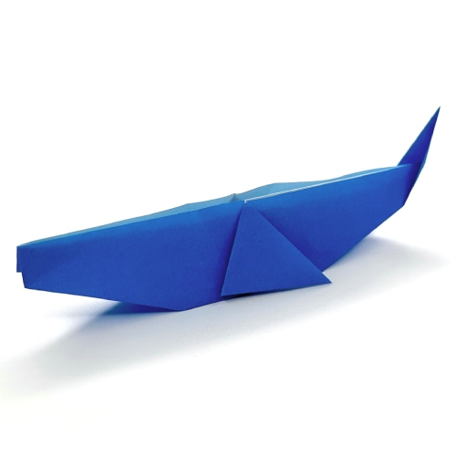

LEARN HOW TO MAKE A WHALE
In Just 10 Easy Steps
Follow these steps respectievly
in order to make a perfect Whale!
in order to make a perfect Whale!
Step: 01

Start with the white side up. Fold in half diagonally and unfold
Step: 02

Fold in half diagonally and unfold
Step: 03

Fold the bottom edges to the center line
Step: 04

Fold the top edges to the center line
Step: 05

Using the previous folds, collapse along the dotted lines to make a fish base
Step: 06

Mountain fold the tip back, to the same level as the circled point. Flip the model around
Step: 07

Fold the sides slightly inwards
Step: 08

Fold the model in half and rotate 90 degrees counterclockwise
Step: 09

Fold the top flap to the right. Repeat behind
Step: 10

Mountain fold to create the tail. You can also make an outside reserve fold to shape the tail
Final Result
Here is your origami Whale!